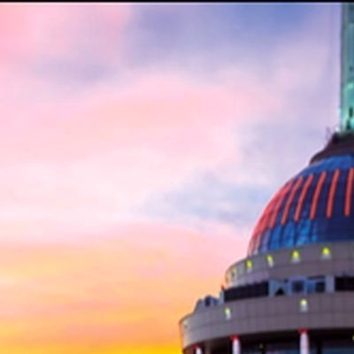
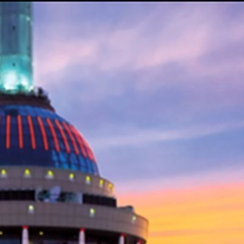
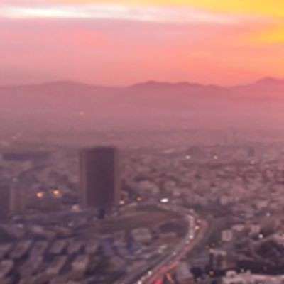
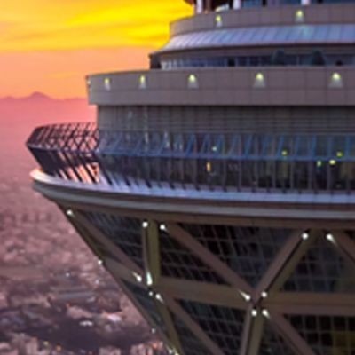
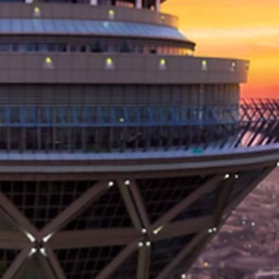
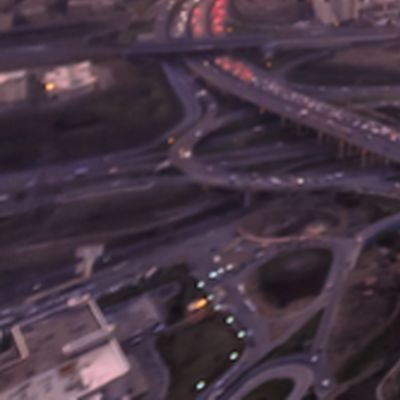
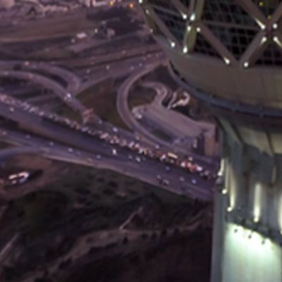
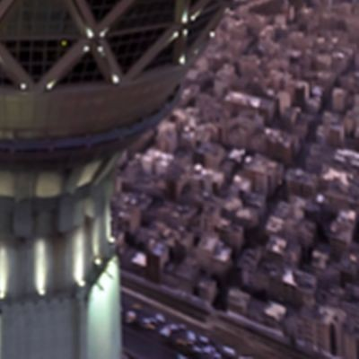

Tehran
Tehran (/tɛəˈræn, -ˈrɑːn, ˌteɪ-/; Persian: تهران Tehrân [tehˈɾɒːn]) is the capital and largest city of Iran. With a population of about 9.5 million people in the city and around 16 million in the larger metropolitan area of Greater Tehran, Tehran is the most populous city in Iran and Western Asia, and has the second-largest metropolitan area in the Middle East, Cairo.







